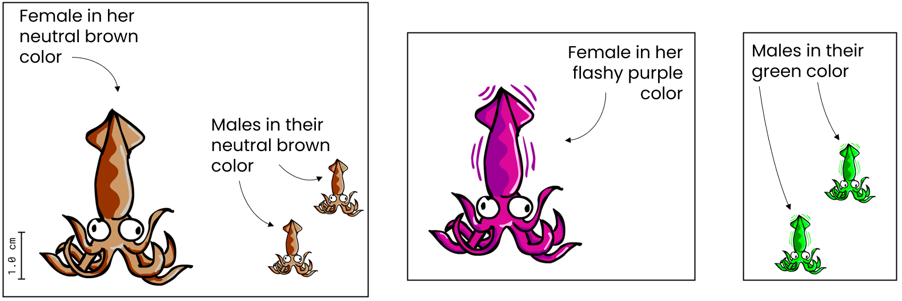

<!DOCTYPE html>
<html>
  <head>
    <title>Demo ExpSupp1</title>
    <script src="jspsych/jspsych.js"></script>
    <script src="jspsych/plugin-html-button-response.js"></script>
    <script src="jspsych/plugin-survey-multi-choice.js"></script>
    <script src="jspsych/plugin-html-slider-response.js"></script>
	<script src="jspsych/plugin-image-keyboard-response.js"></script>
	<script src="jspsych/plugin-html-keyboard-response.js"></script>
    <script src="jspsych/plugin-preload.js"></script>
    <script src="jspsych/plugin-survey-text.js"></script>
    <link href="jspsych/jspsych.css" rel="stylesheet" type="text/css" />
  </head>
  <body></body>
  <script>
  
/* initialize jsPsych */
var jsPsych = initJsPsych({
      experiment_width: 1000,
      on_finish: function() {
        //jsPsych.data.displayData();
        window.location = "https://app.prolific.co/submissions/complete?cc=42C7D9B4"
      }
    });
    
//var condition = CONDITION; 
//var condition = Math.floor(Math.random() * (31 - 26 + 1)) + 26;
var condition;

jsPsych.data.addProperties({condition: +condition});
console.log("The condition is "+condition);

/* create timeline */
var timeline = [];

/* preload images */
var preload = {
  type: jsPsychPreload,
  images: ['img/uni_org_color_li.jpg']
}
timeline.push(preload);

var styles = `
  p {
    text-align: justify
  }
  
`
var styleSheet = document.createElement("style")
styleSheet.type = "text/css"
styleSheet.innerText = styles
document.head.appendChild(styleSheet)


//////////////////////////////////////////////////////
/* Condition selection (just for offline demo) */

var select = {
  type: jsPsychSurveyText,
  questions: [
    {
		prompt: 
		`
		<p><b>Select a condition: type in a number between 1 and 2.</b></p>
		<p>- In condition 1, the first preventer is the left preventer.</p>
    <p>- In condition 2, the first preventer is the right preventer.</p>
		`, 
		placeholder: 'number between 1 and 2',
		required: true,
		name: 'CondSel',
	},
  ],
	on_finish: function(data){
	condition = data.response.CondSel,
	console.log(condition);
	} 
}
timeline.push(select);


//////////////////////////////////////////////////////
/* Instructions ( all conditions)  */
var cond_selected = {
    type: jsPsychHtmlButtonResponse,
    stimulus: function () {
    return "You chose to see Condition "+condition;
		},
    choices: ['Continue']
};
timeline.push(cond_selected);


//////////////////////////////////////////////////////
/* Instructions ( all conditions) */
var welcome = {
    type: jsPsychHtmlButtonResponse,
   stimulus:
   `
    </img>
    <br>
    <p>Welcome to this experiment. On the next screens, we will show you a fictitious scenario that we use to study our research question.</p>
    <p>After the scenario description, we will ask you for your personal intuition about a particular question that has to be made in the scenario.</p>
    <p><b>Please note</b>: For our purposes, it is important that you assume that everything is exactly as described in the scenario,
    even if you think that the described situation is unrealistic, overly artificial, or too simple.</p>
    <p><b>Also note</b>: This study contains memory checks with which we aim to ensure that you correctly understood the central aspects of the scenario.</p>
    <p>So please read the scenario description that we will show you on the next screen thoroughly.</p>
    <br>
    `,
     choices: ['Continue']
}
timeline.push(welcome);


//////////////////////////////////////////////////////
/* Confirmations */
var confs = {
  type: jsPsychSurveyMultiChoice,
  questions: [
    {
      prompt: "This study works properly only on Desktop PCs and Laptops, and not on Smartphones or Tablets. Please confirm that you take part via Desktop PC or Laptop.", 
      name: 'DesktopConf', 
      options: ['1: I confirm', '2: I do not confirm'], 
      required: true
    }, 
    {
      prompt: "For the scientific utility of the results, it is very important that you provide complete and careful responses. How seriously will you take your participation in the study?", 
      name: 'AttentConf', 
      options: ['1: I will take it seriously', '2: I will not take it seriously'], 
      required: true
    }, 
  ],
  on_finish: function(data){
	  jsPsych.data.addProperties({desktop_conf: data.response.DesktopConf, attent_conf: data.response.AttentConf});
  },
  preamble: "<b>Please note:</b>"
};
timeline.push(confs);


/////////////////////////////////////////////////////////
/* Instructions group*/
var instr_1 = {
    type: jsPsychHtmlButtonResponse,
    stimulus:
    `
    <p><i>Please read the following completely fictitious scenario</i>:</p>
    <p>
    Biologists have discovered a new species of small squid living in the Indian ocean. The animals live in groups of three, consisting of two tiny males and one larger female. 
    While the two males of such a triad have eyes only for their beloved female, the female likes to attract other males when she spots them. She then switches from her neutral, 
    utterly unattractive brown color to a flashy purple color. Importantly, female squids can only switch between these two colors. A female can either be brown or it can be purple 
    (there’s nothing in between). Whenever the female's males notice a rival intruder approaching their beloved female, they try to chase him away. To do so, they switch from their neutral brown
    color to a scary green color and approach the rival male as fast as they can.
    </p>
    
    <p>
    The left illustration below shows how female and male squids look like in their neutral brown color. 
    The middle illustration shows how a female squid looks like when she has turned on her seductive, shiny purple color with which she tries to attract rival males when she spots them.
    The right illustration shows how the female's two males look like when they turned on their scary green color that they use to chase away rival males.
    </p>
    <br>
    </img>
    `,
    choices: ['Continue']
}
timeline.push(instr_1);


/////////////////////////////////////////////////////////
/* Instructions flirting */
var instr_2 = {
    type: jsPsychHtmlButtonResponse,
    stimulus:
    `
    <p>
    Below, you see an animation in which you can learn what it looks like when a rival male is approaching a female and the female tries to flirt with him. 
    The rival male will come from above and head toward the female. In this animation, the female’s two “regular” males are prevented from chasinig the rival away by keeping them in a net. 
    You will see that they spot the rival, because they turn on their green color. However, they are too far away from the rival male to chase it away. 
    This way, you can learn how the female reacts towards a rival male if her two males can’t prevent her from flirting with a rivale male.
    </p>
    
    <p>
    To start the animation, you have to click the blue "Start" button. 
    </p>
    <br>
    <iframe src="img/Female_Flirt.html" width="1100" height="705" seamless></iframe>
    <br>
    `,
    choices: ['Continue']
}
timeline.push(instr_2);


/////////////////////////////////////////////////////////
/* Instructions test prompt */
var instr_3 = {
    type: jsPsychHtmlButtonResponse,
    stimulus:
    `
    <p>
    On the next screen, we will show you an animation in which you will observe what happened in one group of squids on a particular occasion. 
    Your task will be to thoroughly observe what happens, because we will then ask you about what you think happened in this situation.
    </p>
    
    <p>
    If you're ready to make that observation, please click "Continue" to proceed to the animation.
    </p>
    `,
    choices: ['Continue']
}
timeline.push(instr_3);


/////////////////////////////////////////////////////////
/* Test: left first */

var left_squid = {
  type: jsPsychSurveyMultiChoice,
  questions: [
    {
      prompt: "Please select the option that best describes what happened in the situation shown in animation.", 
      name: 'Prev_selection', 
      options: [
                  "The left male prevented the female from flirting with the rival male.", 
                  "The right male prevented the female from flirting with the rival male.", 
                  "Both males prevented the female from flirting with the rival male."
                ], 
      required: true
    }, 
  ],
  on_finish: function(data){
	  jsPsych.data.addProperties({preventer_selection: data.response.Prev_selection});
  },
  preamble: 
  `
    <p>
    Below you see the animation window. To start the animation, you have to click the blue "Start" button. The animation will last approximately 20 seconds. 
    After these 20 seconds, the "Start" button will appear again. You can watch the animation as often as you like. 
    Please observe thoroughly what happened on the occasion shown in the animation. 
    </p>
    <br>
    <iframe src="img/Test_Left.html" width="1100" height="705" seamless></iframe>
    <br>
    <p>
    If you have observed carefully what happened in the situation, please answer the following question.
    </p>
  `
};


var right_squid = {
  type: jsPsychSurveyMultiChoice,
  questions: [
    {
      prompt: "Please select the option that best describes what happened in the situation shown in animation.", 
      name: 'Prev_selection', 
      options: [
                  "The left male prevented the female from flirting with the rival male.", 
                  "The right male prevented the female from flirting with the rival male.", 
                  "Both males prevented the female from flirting with the rival male."
                ], 
      required: true
    }, 
  ],
  on_finish: function(data){
	  jsPsych.data.addProperties({preventer_selection: data.response.Prev_selection});
  },
  preamble: 
  `
    <p>
    Below you see the animation window. To start the animation, you have to click the blue "Start" button. The animation will last approximately 20 seconds. 
    After these 20 seconds, the "Start" button will appear again. You can watch the animation as often as you like. 
    Please observe thoroughly what happened on the occasion shown in the animation. 
    </p>
    <br>
    <iframe src="img/Test_Right.html" width="1100" height="705" seamless></iframe>
    <br>
    <p>
    If you have observed carefully what happened in the situation, please answer the following question.
    </p>
  `
};


var cond_left = {
  timeline: [left_squid],
  conditional_function: function () {
    if (condition == 1) {
      return true; 
    } else {
      return false;
    }
  }
}
timeline.push(cond_left);


var cond_right = {
  timeline: [right_squid],
  conditional_function: function () {
    if (condition == 2) {
      return true; 
    } else {
      return false;
    }
  }
}
timeline.push(cond_right);


////////////////////////////////////// free explanation 

var explan = {
  type: 'survey-text',
  preamble: `
      <p>On this screen, we'd like to learn a little bit more about the reasons for your judgment.</p>
      `,
  questions: [
    {prompt: '<i>Please use the text field below to briefly explain why you made this judgment.</i>', 
    rows: 10, 
    columns: 100, 
    required: true,
    name: 'Explanation'
    }
  ],
  on_finish: function(data){
	  jsPsych.data.addProperties({explanation: data.response.Explanation});
  },
};
//timeline.push(explan);


//////////////////////////////////////////////////////
/* Memory Checks */
var mem_check = {
  type: jsPsychSurveyMultiChoice,
  questions: [
    {
      prompt: "Please select the option that is correct about the female's two male squids in the final animation that you saw.", 
      name: 'Prev_check', 
      options: ['The left male saw the intruding male first and chased it away.', 'The right male saw the intruding male first and chased it away.'], 
      required: true
    }, 
  ],
  on_finish: function(data){
	  jsPsych.data.addProperties({preventers_check: data.response.Prev_check});
  },
  preamble: "<b>Please answer this additional question:</b>"
};
timeline.push(mem_check);


/////////////////////////////////////// demographics
var demogr_age = {
  type: jsPsychSurveyText,
  name: 'Age_query',
  questions: [
    {prompt: 'How old are you?', 
    placeholder: 'Age as a number', 
    required: true,
    name: 'Age'
    },
  ],
  on_finish: function(data){
	  jsPsych.data.addProperties({age: data.response.Age});
  },
}


var demogr_gender = {
  type: jsPsychSurveyMultiChoice,
  name: 'gender_query',
  questions: [
    {
      prompt: "Please indicate with which gender you identify.", 
      options: ['1: male', '2: female', '3: non-binary', '4: prefer not to say'],
      required: true,
      name: 'Gender'
    },
  ],
  on_finish: function(data){
	  jsPsych.data.addProperties({gender: data.response.Gender});
  },
};
timeline.push(demogr_age, demogr_gender);


/////////////////////////////////////// technical issues
var tech_issues = {
  type: jsPsychSurveyText,
  name: 'Tech_issue_query',
  questions: [
    {prompt: 'In the text field below you can report any errors that you came across during the study (e.g., technical issues, layout problems, spelling errors, errors in program logic and flow, etc.).', 
    rows: 10, 
    columns: 100, 
    required: false,
    name: 'Tech_issue_report'
    },
  ],
  on_finish: function(data){
	  jsPsych.data.addProperties({tech_issues: data.response.Tech_issue_report});
	  console.log(data.response.Tech_issue_report)
  },
}
timeline.push(tech_issues);

///////////////////////////////////// debriefing

var debriefing = {
  type: jsPsychHtmlButtonResponse,
  stimulus: 
    `
    </img>
    <p><b>Thank you for taking part in this study!</b></p>
  
    <p>The aim of this experiment is to find out more about how people reason about the preventive relationships. 
    If you are interested in further details or if you have any questions or comments concerning the experiment, 
    feel free to contact me (Simon Stephan) under <i>sstepha1@uni-goettingen.de</i>
    
    <p>To ensure you receive your reward, please click the button below to return to the Prolific website:</p>
    `
    ,
    choices: ['Finish study']
};
timeline.push(debriefing);

/////////////////////////////////////////////////////////////////
/* start the experiment */
    jsPsych.run(timeline);


  
  </script>
</html>